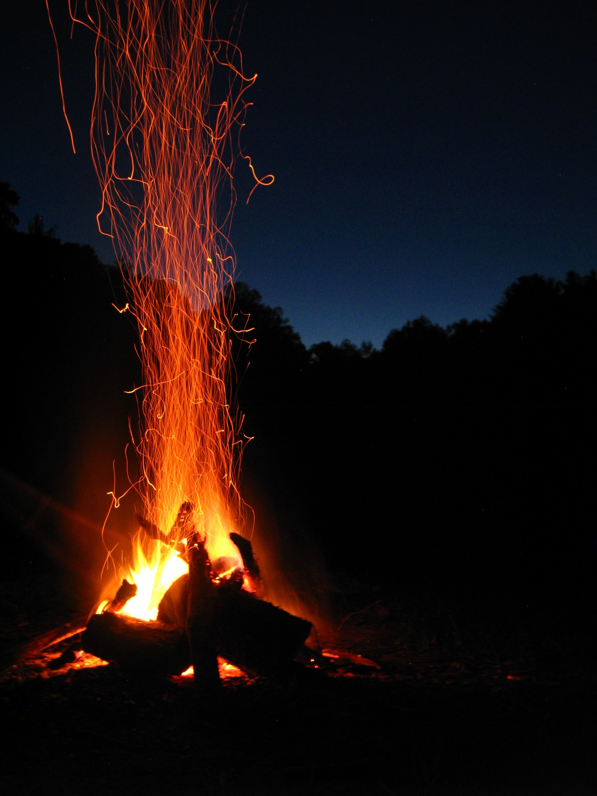

Brandon finishes eating and keeps asking the villagers about the ruins. He asks all the people in the village, but no one knows about those ruins. it's getting dark, so Brandon decides to spend the night in the forest. He takes some sticks and makes a campfire. He eats the rest of his food and falls asleep.
The next day, Brandon returns to the village to buy some food from the same vendor. He buys some food and sits on a nearby big rock to eat. Brandon was losing hope of finding it because he couldn't find any idea where the ruins might be located.
Brandon thought. "Maybe the "Mystic Stone" is just a rumor".
After several minutes, the mysterious person reappears. Brandon thinks that maybe that man knows something about it. After all, he is the only person Brandon has not asked.
Brandon calls the odd man and asks if he knows anything about ruins and mystical stone.
"So, you have also come for the rumors, huh?".The mysterious man says.
"That is an old legend that makes this town popular, but unfortunately it is just a made up story for the elders of this village."
After that, the mysterious man named William and Brandon had a long talk about the stories of the village. One more incredible than the last.